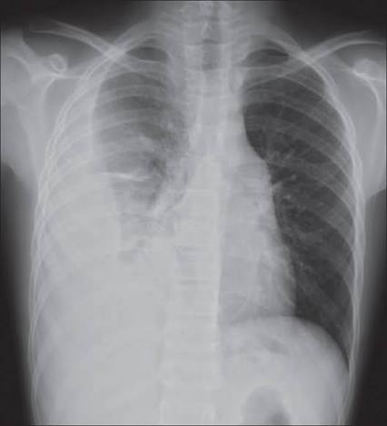
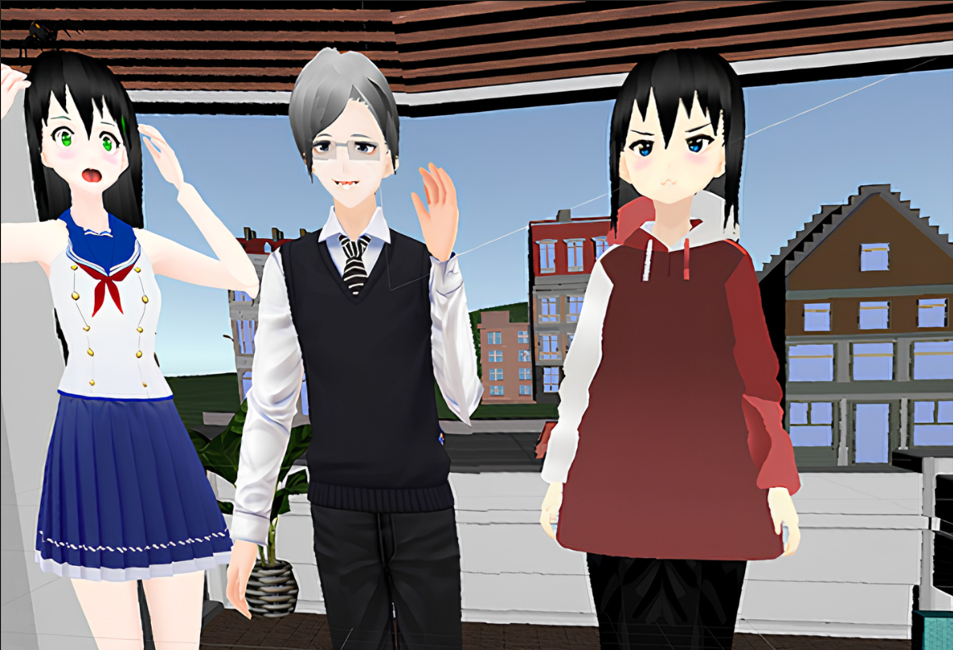

Projects
Applied technology projects across healthcare, neuroeducation and assistive technology.
AI Applied to Neuroeducation
Artificial intelligence and inclusive learning.

TEOplay
A neuroeducation platform that connects families, schools and specialists to support educational processes through technology and artificial intelligence.
AI Applied to Medicine
Artificial intelligence for healthcare applications.

Chest X-Ray Analysis
An AI-based system that validates chest X-ray images and classifies them into Normal and Pneumonia categories using convolutional neural networks.
Assistive Technology
Technology designed to support accessibility and inclusion.

Virtual Reality for Social Skills Development
Master's thesis project exploring virtual reality as a complementary technological resource to support social skills development in young people aged 14–17 diagnosed with Asperger's syndrome.